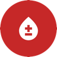

LIFELINK KHPhnom Penh, 30 September 2026
To: The Director, National Blood Transfusion Center
Subject: Request for guidance and confirmation of facts for LifeLink KH, a mobile app that connects voluntary blood donors with patients who need blood
My name is Nem Sothea. I am a Senior Software Engineer and an IT Master's student at Asia Euro University (AEU). I write on behalf of a team of five students who built the mobile app LifeLink KH in the course Cross-Platform Mobile App Development, supervised by Mr. SOK Pongsametrey. I am also a voluntary blood donor.
LifeLink KH is free, shows no ads and never sells its users' information. It helps:
The app sends donors only to the NBTC or a hospital blood bank, and always says that the centre's staff make the final decision.
We built LifeLink as volunteers, not for profit. We want to help patients and their families when they need blood urgently, and to help Cambodia's donor community grow together — and one day to share what we learn with people in other countries too. We are not asking for funding or sponsorship, only for guidance, so that what the app tells donors is correct and safe.
The medical facts in the app come from the WHO and from statements by the NBTC reported in the press, but they have not been confirmed by the NBTC itself. I would therefore respectfully ask:
We will not use the NBTC's name or logo, or say "confirmed by the NBTC", in the app without your permission.
More detail is at https://lifelinkkh.vercel.app/en/getting-blood, and screenshots are attached. I can be reached at 010 552 563 or nemsothea13@gmail.com.
Thank you for your time and consideration.
Respectfully,
Nem Sothea
On behalf of the LifeLink KH team
Senior Software Engineer · IT Master's student, Asia Euro University (AEU)
Supervising lecturer: Mr. SOK Pongsametrey